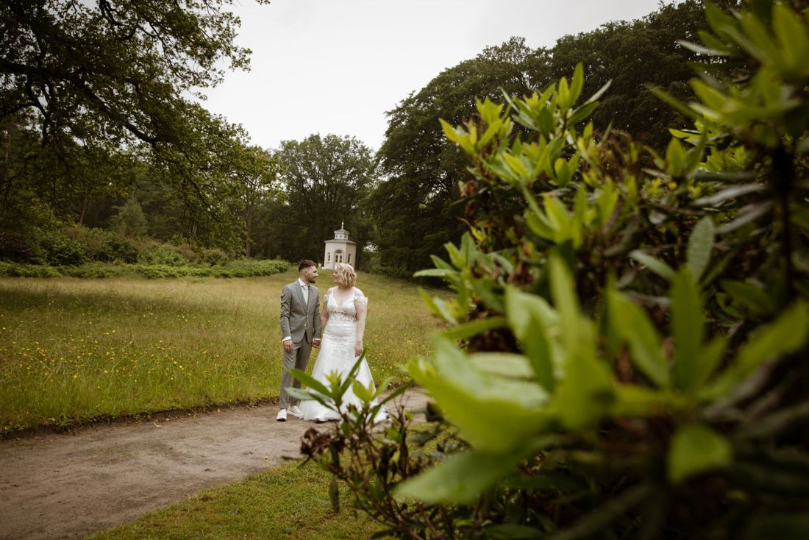
Bruiloft
De hele dag vastgelegd zoals hij echt was, van de ceremonie tot het feest. Zonder te veel geposeerde foto's.
6 uurKennismaking voorafAlle digitale beelden
€ 1.195Meer info
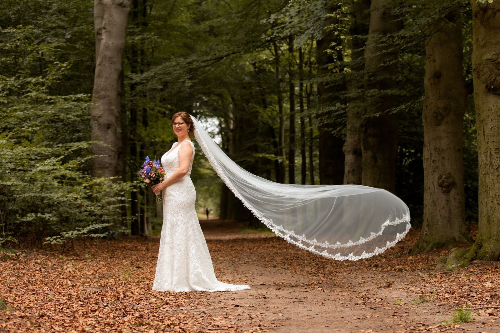
Bruids- en familiefotograaf in Bergen op Zoom. Ontspannen reportages in het bos, op het strand of op jullie eigen plek, zonder stijve poses.
Wij hadden ons geen betere fotograaf kunnen wensen!Loïs van der Zee, via Google
Altijd op locatie, op een plek die past bij jullie verhaal. Klik voor wat er bij een reportage zit.

De hele dag vastgelegd zoals hij echt was, van de ceremonie tot het feest. Zonder te veel geposeerde foto's.
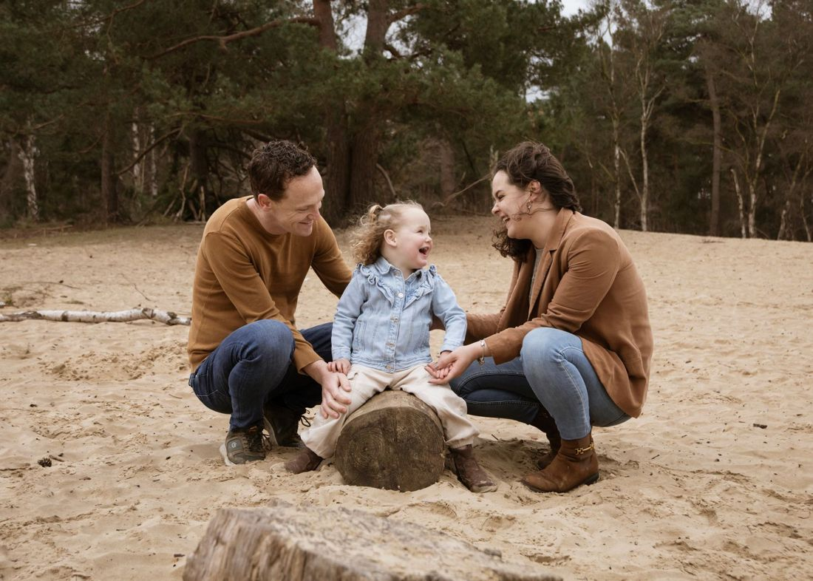
Een ontspannen shoot met het gezin of de hele familie, in het bos, op de heide of aan het strand.
Voor een feestje, verloving, korte trouwceremonie of huwelijksaanzoek kunnen jullie mij ook benaderen. Andere wensen overleggen we samen.
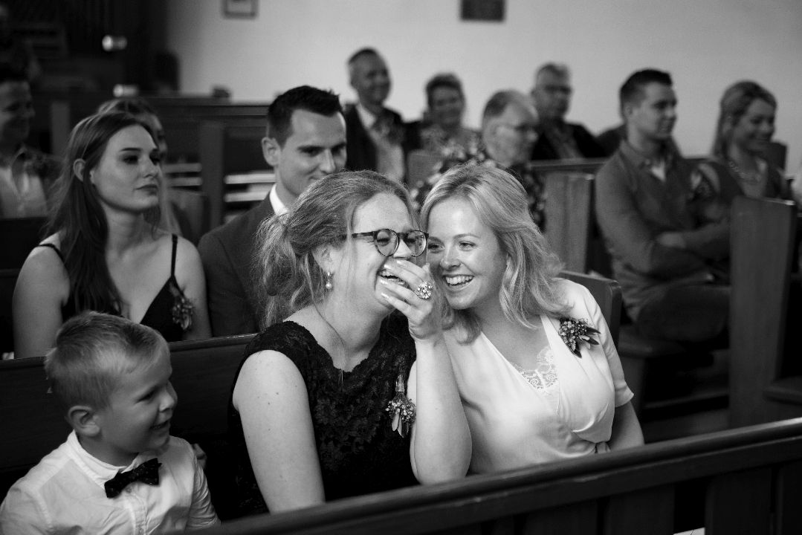
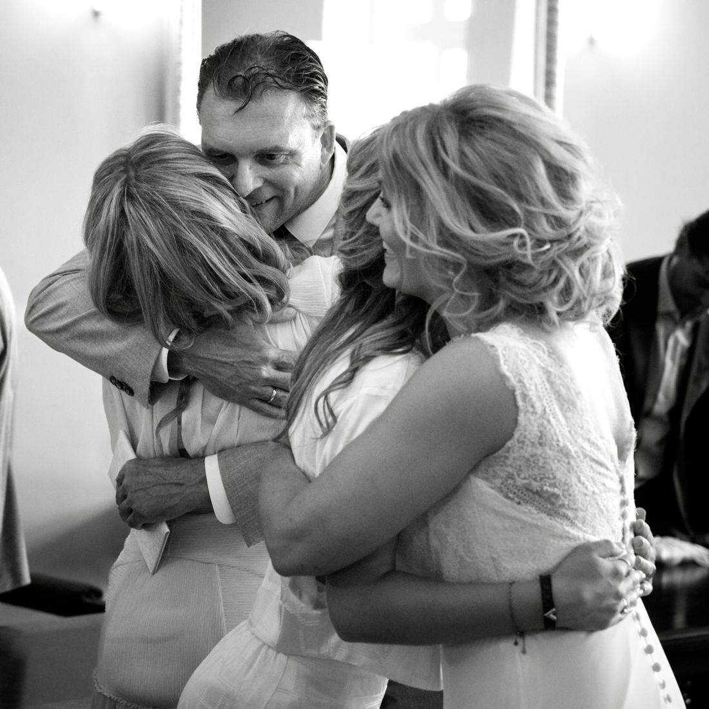
Ik fotografeer journalistiek: ik observeer en zoek de momenten die jullie zelf niet doorhebben. Met af en toe een kleine instructie, maar nooit geregisseerd.
"Mijn doel? Dat jullie je trouwdag opnieuw beleven, precies zoals hij écht was."
Bruiloften en families in Bergen op Zoom en omgeving, van de Brabantse Wal tot het strand.
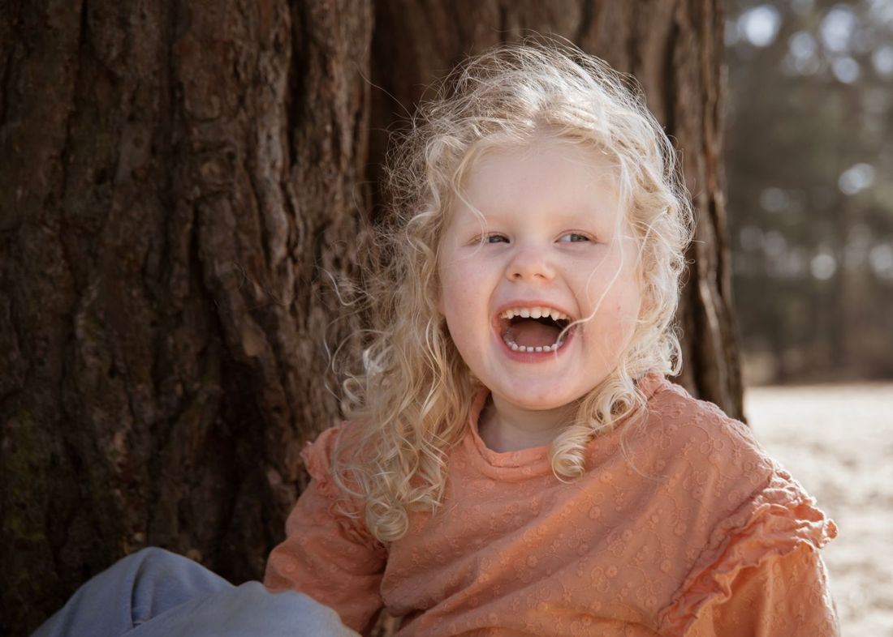
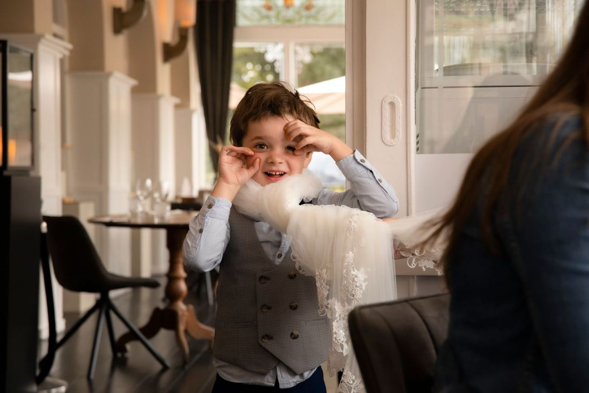
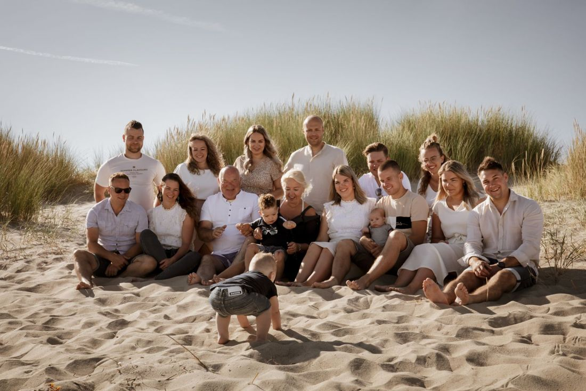
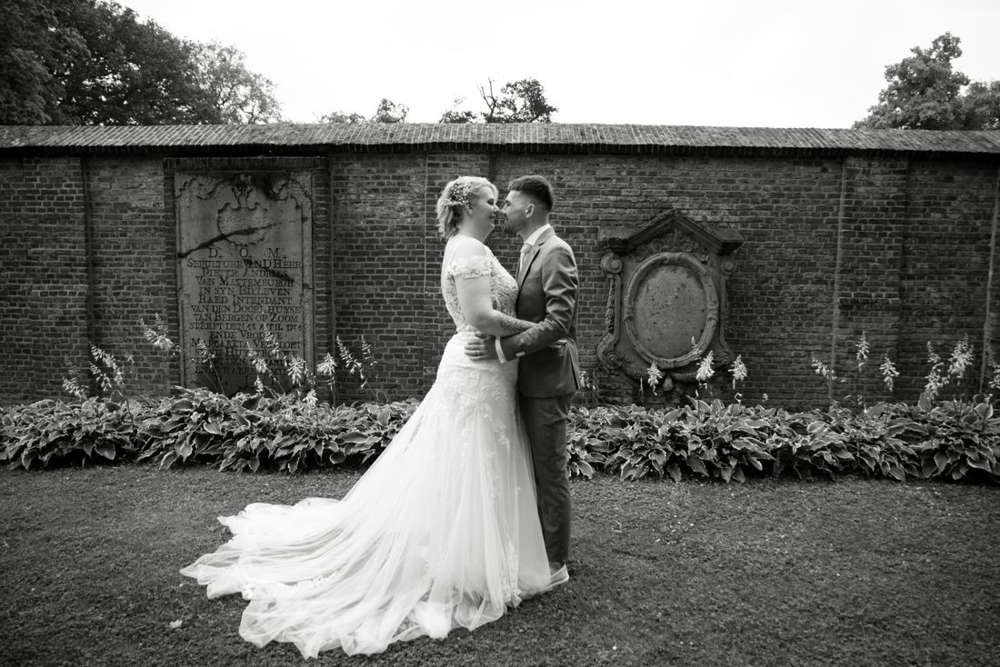
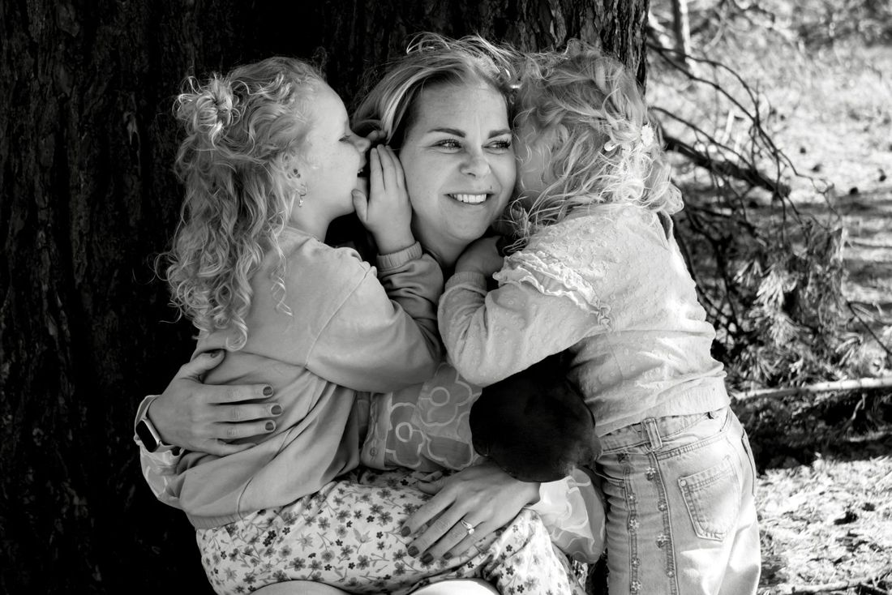
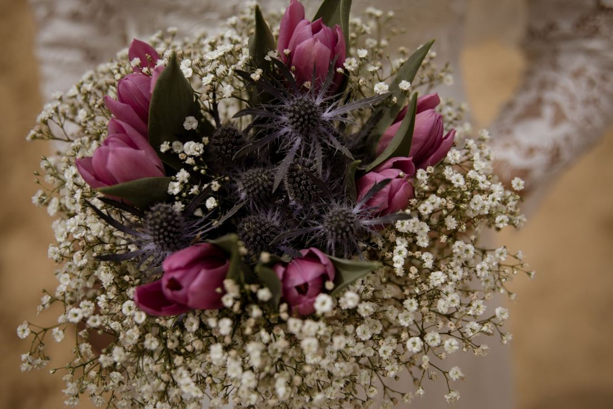
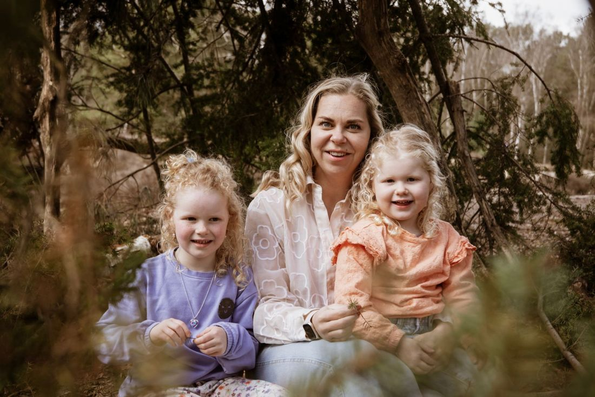
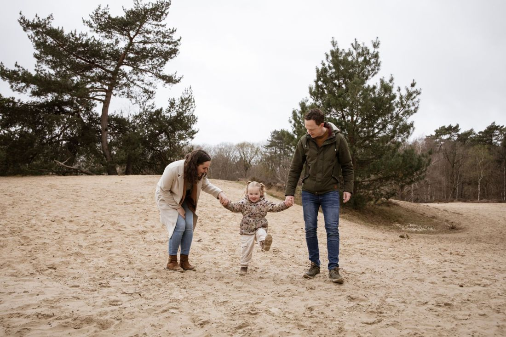
Meer zien? Volg Anders Fotografie op Instagram.
★★★★★"Andrea is echt een gezellige en betrouwbare fotografe. Ze heeft onze trouwdag zo mooi weten vast te leggen! Wij hadden ons geen betere fotograaf kunnen wensen! Echt een aanrader❤️"
★★★★★"Geweldige fotograaf! Vriendelijk, rustig en denkt graag mee. In 2017 heeft Andrea ons huwelijk prachtig vastgelegd en sindsdien hebben we haar nog regelmatig teruggezien. Zeer diverse momenten heeft ze voor ons gefotografeerd en alle beelden zijn even prachtig! We blijven terugkomen."
★★★★★"Fijne communicatie, snapte wat we wilde. Flexibel en vlot. Goede prijs/kwaliteit."
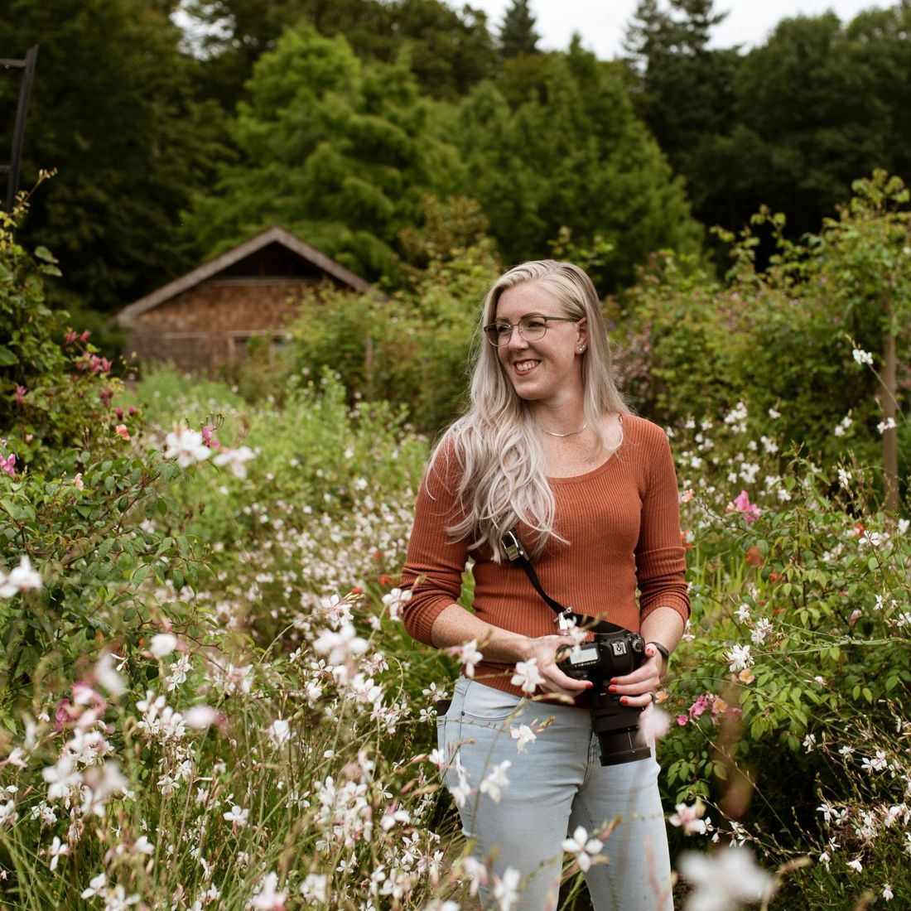
Fotograaf met een grote liefde voor de natuur, vooral de bosrijke omgeving rond Bergen op Zoom. Daar kom ik met mijn eigen gezin ook graag, om te wandelen, te fietsen of in de plassen te springen.
De mooiste foto's ontstaan als je je op je gemak voelt. Daarom nemen we de tijd: we wandelen een stukje, de kinderen krijgen de vrijheid om te ontdekken en ik luister goed naar jullie wensen. Liever het strand en de duinen? Dan ga ik gezellig mee.
Laat weten wat jullie willen vastleggen en wanneer. Samen kiezen we een plek die bij jullie past.
Na de afspraak krijgen jullie een PDF met tips over kleding en kleuren. Bruidsparen krijgen een eigen versie.
Een ontspannen reportage op locatie. Daarna kiezen jullie de foto's in een online galerij.
Meestal ongeveer 90 minuten, afhankelijk van de grootte van de groep. Bij een trouwreportage adviseer ik niet meer dan 2 locaties, in verband met reistijd en een strakke planning.
De beelden van een familiereportage staan binnen 3 weken in een online galerij. Voor een bruiloft is dat rond de 8 weken.
Bij een familiereportage zitten standaard 5 digitale beelden. Meer beelden of de hele galerij kunnen jullie bijbestellen. Bij een bruiloft krijgen jullie alle beelden die door de selectie komen.
Dan kijken we samen of een ander moment op de dag beter uitkomt. Wordt de hele dag regen of harde wind voorspeld, dan verplaatsen we de reportage of gaan we naar een binnenlocatie. Bij een bruiloft is een plan B voor een droge locatie altijd handig.
Na afronding bewaar ik de geselecteerde beelden nog 2 jaar in mijn cloud. Zet ze zelf ook op meerdere plekken veilig.
Vertel wat jullie willen vastleggen en op welke datum. Dan kijk ik of ik beschikbaar ben.
Stuur gerust een berichtje, dan denk ik graag met jullie mee.